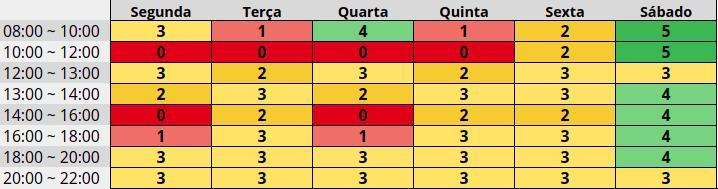

Planejamento
Heatmap

O Heatmap é uma excelente maneira de mapear quais são os dias da semana e o horário em que existe maior disponibilidade das pessoas, essa tabela mostra quantas pessoas estão disponíveis em cada dia e cada horário da semana. A tabela completa com a disponibilidade individual está disponível no Drive.
Cronograma
- Realizado de 18/08 até 07/09
| Tarefa | Participante(s) | Revisor(es) | Entrega | Previsão |
|---|---|---|---|---|
| HeatMap | Geraldo | Damarcones, Isabella e Lucas | 01/09 | 05/09 |
| Rich Picture | Damarcones | Bruna | 02/09 | 05/09 |
| Wiki | Isabella e Lucas | Bruna, Damarcones e Geraldo | 01/09 | 05/09 |
| Planejamento | Bruna | Isabella | 01/09 | 05/09 |
- Realizado de 08/09 até 28/09
| Tarefa | Participante(s) | Revisor(es) | Entrega | Previsão |
|---|---|---|---|---|
| Técnicas de elicitação | 26/09 | |||
| Introspecção | 26/09 | |||
| Observação Participativa | 26/09 | |||
| Análise de Protocolo | 26/09 | |||
| Etnografia | 26/09 | |||
| Storytelling | 26/09 | |||
| Brainstorm | 26/09 | |||
| Entrevista | 26/09 | |||
| Questionário | 26/09 | |||
| Personas | 26/09 | |||
| Resultados | 26/09 | |||
| Técnicas de priorização | 26/09 | |||
| First Things First | 26/09 | |||
| MoScoW | 26/09 |
- Realizado de 15/09 até 09/10
| Tarefa | Participante(s) | Revisor(es) | Entrega | Previsão |
|---|---|---|---|---|
| Cenários | 07/10 | |||
| Léxicos | 07/10 | |||
| Casos de uso | 07/10 | |||
| Diagramas | 07/10 | |||
| Especificação Suplementar | 07/10 |